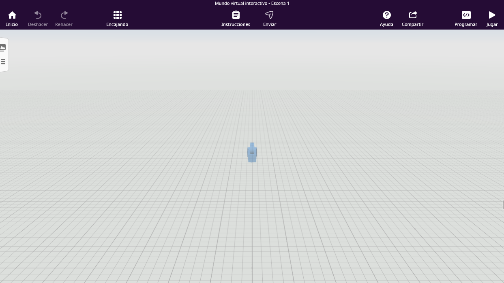

Creación de espacios virtuales con CoSpaces e inmersión con Gafas 3D
2.3. Construcción de mundos
Al crear un nuevo proyecto, te encontrarás con un lienzo digital completamente en blanco (un escenario vacío con una cuadrícula gris) listo para ser diseñado. En el centro del escenario verás un icono azul con forma de cámara cinematográfica: esa es la Cámara Principal, que determinará el punto de vista del usuario cuando empiece a jugar o explorar tu mundo virtual.

Antes de empezar a colocar objetos, es fundamental conocer las herramientas principales que ofrece la barra superior de la pantalla:
- 🏠 Inicio: Te permite salir del proyecto actual y volver al panel principal de tus CoSpaces.
- ↩️ / ↪️ Deshacer y Rehacer: Dos botones salvavidas. Si te equivocas colocando un objeto o borras algo por error, pulsa "Deshacer" para volver atrás.
- 📱 Encajando (Imán): Activa o desactiva la cuadrícula magnética. Te ayudará a que las paredes, suelos y objetos se alineen perfectamente entre sí al moverlos.
- 📝 Instrucciones / Enviar: Espacio para añadir notas sobre tu proyecto o para entregarlo si forma parte de una tarea de clase.
- 🛠️ Programar (CoBlocks): Al pulsar este botón se abrirá el panel lateral derecho de programación, donde escribirás las líneas de código por bloques para dar vida a tus personajes.
- ▶️ Jugar: El botón de previsualización. Púlsalo en cualquier momento para probar tu escenario en primera persona, interactuar con tu entorno y comprobar si la programación funciona correctamente.
¡Cuidado con la cámara!
No borres nunca el icono de la cámara azul del centro. Todo lo que construyas debe estar orientado de forma que la cámara pueda enfocarlo al pulsar el botón "Jugar".
Obra publicada con Licencia Creative Commons Reconocimiento Compartir igual 4.0